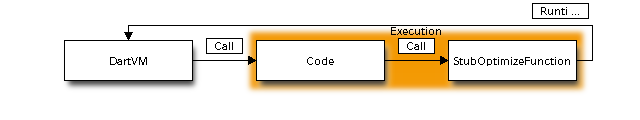
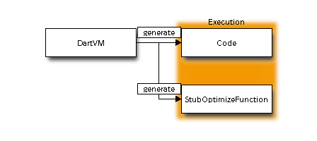

Dart VM Advent Calendar 2012 12/11¶
関数呼び出しを2000回を越えると、stub OptimizeFunctionが呼ばれるわけですが、その辺を詳しく。
JVMのコンパイルフロー¶
たとえば、インタプリタ実行するJVMの場合、インタプリタ実行中に特定の関数呼び出しが規定数を越えた場合、 以下のようなフローでJITコンパイルします。
- インタプリタ実行中に関数呼び出しを行う。
- その関数を呼び出した回数をインクリメント
- 規定値を越えた確認する。もし越えた場合、JITコンパイルをコンパイルスレッドに依頼する。
- 呼び出し関数に飛んで、インタプリタ実行を継続する。
- コンパイルスレッドは、コンパイル用のQueueから、コンパイル依頼を1個取り出す。
- JITコンパイルしてコードを生成する。
- mutexでlockして、コードを対象クラスのメソッドにintallする。
- Lockを解除し、次のコンパイル依頼をQueueから取り出す。
基本的には、インタプリタスレッドとコンパイルスレッドは別です。
インタプリタは、JITコンパイルされたコードが、対象メソッドにinstallされていたら、 インタプリタ実行から対象メソッドのコードへ処理を移します。
そのため、JITコンパイルで処理が止まることはないです。
Dart VMのコンパイルフロー¶
Dart VMのコンパイルフローは、JITコンパイル -> コードの実行 -> JITコンパイル -> コードの実行
と、シーケンシャルにJITコンパイルを行います。
そのため、JITコンパイルして止まる時間が含まれます。
Returnのコード
0xb30482b1 ba11042db3 mov edx,0xb32d0411 'Function 'fibo': static.'
0xb30482b6 ff422b inc [edx+0x2b] // fiboのusage_counterをinc
0xb30482b9 817a2bd0070000 cmp [edx+0x2b],0x7d0 // 2000と比較してhotcode check
0xb30482c0 7c05 jl 0xb30482c7
0xb30482c2 e8e185ffff call 0xb30408a8 [stub: OptimizeFunction]
Stub OptimizeFunction
Code for stub '_stub_OptimizeFunction': {
0xb30408a8 55 push ebp
0xb30408a9 89e5 mov ebp,esp
0xb30408ab 6800000000 push 0
0xb30408b0 50 push eax
0xb30408b1 52 push edx // Function 'fibo' : static.
0xb30408b2 b950070b08 mov ecx,0x80b0750 // OptimizedInvokedFunctionRuntimeEntry
0xb30408b7 ba01000000 mov edx,0x1
0xb30408bc e867f73702 call 0xb53c0028 [stub: CallToRuntime]
0xb30408c1 5a pop edx
0xb30408c2 58 pop eax
0xb30408c3 89ec mov esp,ebp
0xb30408c5 5d pop ebp
0xb30408c6 c3 ret
}
CallToRuntimeによって呼び出すOptimizedInvokedFunctionは、DartVMのRuntimeに含まれます。
そのため、絵で書くとこうかな。。

ここから少しややこしいところなのですが、
CodeとStubOptimizeFunctionは、実行用のコードをDart VMが生成しています。
Codeは、JITコンパイルして生成したコードであり、StubOptimizeFunctionは、mainの実行を始める前に、Dart VMが生成しておいたコードです。
そのため、Stub系には、Stubを生成するGeneratorと、生成されたStubが存在します。

生成されたStubOptimizedFunctionのコード
Stub OptimizeFunction
Code for stub '_stub_OptimizeFunction': {
0xb30408a8 55 push ebp
0xb30408a9 89e5 mov ebp,esp
0xb30408ab 6800000000 push 0
0xb30408b0 50 push eax
0xb30408b1 52 push edx // Function 'fibo' : static.
0xb30408b2 b950070b08 mov ecx,0x80b0750 // OptimizedInvokedFunctionRuntimeEntry
0xb30408b7 ba01000000 mov edx,0x1
0xb30408bc e867f73702 call 0xb53c0028 [stub: CallToRuntime]
0xb30408c1 5a pop edx
0xb30408c2 58 pop eax
0xb30408c3 89ec mov esp,ebp
0xb30408c5 5d pop ebp
0xb30408c6 c3 ret
}
Dart VMのRuntimeに含まれる、StubOptimizeFunctionを生成するGenerator
GenerateOptimizeFunctionStub:
// Calls to runtime to ooptimized give function
// EDX: function to be reoptimized.
// EAX: result of function being optimized (preserved).
void StubCode::GenerateOptimizeFunctionStub(Assembler* assembler) {
AssemblerMacros::EnterStubFrame(assembler);
__ pushl(EAX);
__ pushl(EDX);
__ CallRuntime(kOptimizeInvokedFunctionRuntimeEntry);
__ popl(EDX);
__ popl(EAX);
__ LeaveFrame();
__ ret();
}
Generatorは、主にDartVMが持つAssemblerで記述されています。上は一応、C++です。
JIT Assemblerと呼ぶのかな？
上記のGeneratorによって、Dart VMが実行時(主にIsolateの初期化中)にStubのコードを生成します。
JITコンパイラは、DartのソースコードをJITコンパイルする際に、生成済みのStubへのcallを埋め込んで、コードを生成します。
OptimizeInvokedFunction¶
話を戻すと、StubOptimizeFunctionから、DartVMが内包するOptimizedInvokedFunctionが呼ばれます。
runtime/vm/code_generator.cc::OptimizedInvokedFunction
// This is called from function that needs to be optimized.
// The requesting function can be already optimized (reoptimization).
DEFINE_RUNTIME_ENTRY(OptimizeInvokedFunction, 1) {
ASSERT(arguments.ArgCount() ==
kOptimizeInvokedFunctionRuntimeEntry.argument_count());
const intptr_t kLowInvocationCount = -100000000;
const Function& function = Function::CheckedHandle(arguments.ArgAt(0));
// JITコンパイル(最適化)が指示されている場合、
if (function.is_optimizable()) {
const Error& error =
Error::Handle(Compiler::CompileOptimizedFunction(function)); //JITコンパイル(最適化)
if (!error.IsNull()) {
Exceptions::PropagateError(error);
}
const Code& optimized_code = Code::Handle(function.CurrentCode());
ASSERT(!optimized_code.IsNull());
// Set usage counter for reoptimization.
function.set_usage_counter(
function.usage_counter() - FLAG_reoptimization_counter_threshold);
} else {
if (FLAG_trace_failed_optimization_attempts) {
PrintCaller("Not Optimizable");
}
// TODO(5442338): Abort as this should not happen.
function.set_usage_counter(kLowInvocationCount);
}
}
ここからコンパイル処理です。
runtime/vm/compiler.cc
RawError* Compiler::CompileOptimizedFunction(const Function& function) {
return CompileFunctionHelper(function, true); // Optimized.
}
static RawError* CompileFunctionHelper(const Function& function,
bool optimized) {
...
if (setjmp(*jump.Set()) == 0) {
TIMERSCOPE(time_compilation);
Timer per_compile_timer(FLAG_trace_compiler, "Compilation time");
per_compile_timer.Start();
ParsedFunction* parsed_function = new ParsedFunction(
Function::ZoneHandle(function.raw()));
if (FLAG_trace_compiler) {
OS::Print("Compiling %sfunction: '%s' @ token %"Pd"\n",
(optimized ? "optimized " : ""),
function.ToFullyQualifiedCString(),
function.token_pos());
}
Parser::ParseFunction(parsed_function); // ソースコードをASTに変換
parsed_function->AllocateVariables();
const bool success =
CompileParsedFunctionHelper(*parsed_function, optimized); //コンパイル
まとめ¶
- StubInvokedFunctino経由で、DartVMのJITコンパイルを呼ぶ。
- ここまでシングルスレッドでシーケンシャルに実行。